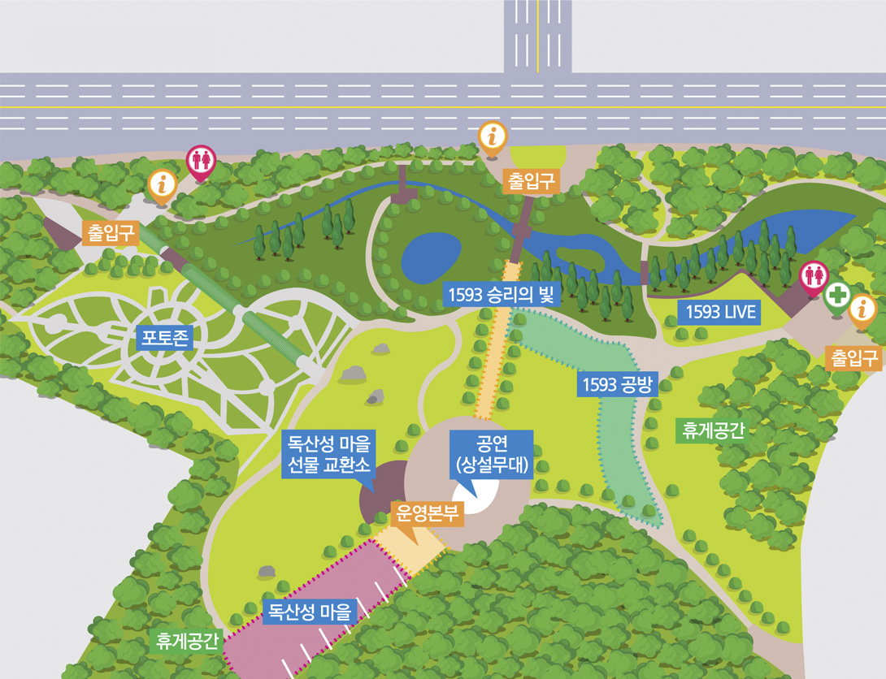

<?
$menu_focus='1';
include_once('../../layout/head.sub.html');
?>
<!-- wrap -->
<div id="layout">
<?
include_once('../../layout/head.html');
?>
<div id="content">
	
	<div class="sub_visual" style="background-image:url('../../assets/images/sub_visual1.jpg');">
		<h2>오산 독산성 문화제</h2>
		<span class="stit">2022 오산 독산성 문화제</span>
	</div>
	
	<div class="sub_content location">
		<div class="sub_box">
			<div id="" class="container">
				<h3>행사안내</h3>
				<div class="sb_cnt guide_cnt">
					<div class="gc_tit">오산과 수원, 화성의 평야 한가운데 솟아 주변을 두루 살필 수 있는 전략적 요충지!</div>
					<div class="gc_txt">독산성(禿山城)은 백제시대 쌓은 것으로 성 둘레가 1,100m이고 오산과 수원, 화성의 평야 한가운데 솟아 주변을 두루 살필 수 있는 전략적 요충지에 위치한다.
					임진왜란 중인 선조 25년(1592) 전라도 순찰사 권율장군이 독산성에 주둔하며 왜군 수만 명을 무찌르고 성을 지킴으로써 아군이 경기지역으로 북상할 수 있도록
					하였으며, 이후에도 도성을 방어하는 큰 축을 담당하였다.
					</div>
					<div class="event_info clearfix">
						<div class="thum"></div>
						<div class="cnt">
							<div class="item">
								<div class="tit">행사명</div>
								<div class="cnt">오산 독산성 문화제</div>
							</div>
							<div class="item">
								<div class="tit">장소</div>
								<div class="cnt">오산 세교 고인돌 공원</div>
							</div>
							<div class="item">
								<div class="tit">기간</div>
								<div class="cnt">2022년 10월 1일(토) ~ 2022년 10월 2일(일) / 2일간</div>
							</div>
							<div class="item">
								<div class="tit">주최/주관</div>
								<div class="cnt"> </div>
							</div>
							<div class="item">
								<div class="tit">주요 프로그램</div>
								<div class="cnt">지역예술공연 / 마술쇼 / 드로잉쇼 / 퓨전 국악 공연 / 연희그루공연 / 시민노래자랑 / 시민화합공연</div>
							</div>
						</div>
					</div>
				</div>
			</div>
		</div>

		<div class="sub_box sb_gray">
			<div id="" class="container">
				<h3>행사장 안내도</h3>
				<div class="sb_cnt sb_img">
					
				</div>
			</div>
		</div>
	</div>

</div>

<?
include_once('../../layout/tail.html');
?>
</div>
<!-- //wrap -->
<?
include_once('../../layout/tail.sub.html');
?>
</body>
</html>